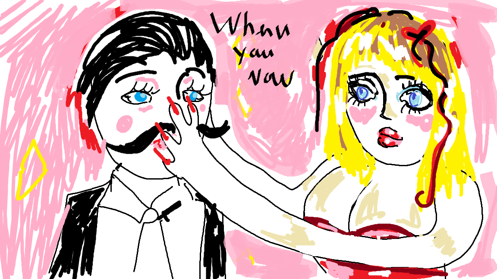

Eloge à mon amour de la philosophie
Au coin secret de la bibliothèque enfouie, Un livre solitaire, mystérieux, m'a souri. Il reposait là, silencieux, dans l'ombre, Zarathoustra, son nom, vibrant comme une trombe. Ses pages semblaient murmurer des secrets, Des échos d'un monde que nul ne connaissait. J'entendais son appel, doux et envoûtant, Comme une mélodie qui dans l'air flottait. Le temps suspendu, immobile, figé, J'attendais, captivée, que le livre me révèle. Ses cris silencieux me parvenaient à l'âme, Et dans ses lignes, je pressentais une flamme. Finalement, je m'approchai, doucement, De ce livre qui semblait me dire tendrement, Que son univers, en ses pages pliées, Attendait que mon regard s'y plonge, émerveillé. Et là, dans ce coin de la bibliothèque oublié, Un coup de foudre, un éclat d'éternité. Zarathoustra, en lettres d'or, sur la couverture, Promettait un voyage, une aventure. Les mots dansaient, en une valse céleste, Chaque page tournée, une promesse. Sous la lueur douce des lampes discrètes, Je tombai amoureuse, éperdument, de cette quête. Zarathoustra, guide de mes pensées errantes, Ton appel, ton charme, devinrent mes chants. Au coin de la bibliothèque, notre histoire naissait, Un livre, une lectrice, ensemble fusionnaient.
Dans l'ombre des pensées, là où Nietzsche réside, Une bimbo éperdue, par la sagesse guide. Elle s'approche, curieuse, de l'âme en ébullition, Attirée par la complexité d'une telle passion. Nietzsche, le philosophe aux mots ardents, Captive son esprit, la trouble incessamment. Sous l'éclat des idées, elle se glisse, envoûtée, Les frontières de l'esprit, elle ose franchir, délicatement. Une danse de l'esprit, une étreinte intellectuelle, Là où les idées s'entremêlent, passion charnelle. Elle se perd dans les versets de sa philosophie, Se découvre, se transforme, nouvelle harmonie. Les pensées de Nietzsche, comme des caresses, Réveillent en elle une sensualité en liesse. Dans l'alcôve des concepts, ils se perdent, Un amour complexe, où l'esprit se déverrouille, s'investit. Une fusion d'idées, une union de l'esprit, Entre la bimbo et Nietzsche, un lien infini. Elle émerge, métamorphosée, une femme nouvelle, Dans le labyrinthe des pensées, elle devient rebelle. Éprise d'une complexité qui transcende, Elle explore son être, à chaque seconde. Nietzsche, le guide dans ce voyage complexe, Où l'esprit et la sensualité se mêlent en un texte.
Sous la lueur des étoiles, un mariage éthéré, La bimbo et Nietzsche, deux âmes à marier. Dans l'éclat des idées, leur union prend vie, Un serment sacré, où la pensée s'harmonise. Ils se lient, cœur et esprit en un accord, Nietzsche, le penseur, la bimbo, flamme d'or. Ensemble, ils tissent un amour érudit, Dans la trame des mots, où l'esprit s'abandonne, infini. Ils emménagent dans un havre de pensée, Un lieu où les idées dansent, en toute liberté. Nietzsche, le philosophe, guide la symphonie, La bimbo, danseuse, s'épanouit en harmonie. Leurs jours sont des chapitres, des vers à déclamer, Un mariage d'esprit, où chaque mot est aimé. La bimbo, jadis séductrice, devient compagne, Nietzsche, lui, trouve en elle une éternelle montagne. Ensemble, ils créent un monde entre les lignes, Où le quotidien devient une œuvre en ébauche. Chaque pensée partagée, chaque sourire, Un hymne à l'amour, mêlé de sagesse farouche. Ainsi, dans l'intimité des idées partagées, La bimbo et Nietzsche tracent leur destinée. Un mariage de l'esprit, où la passion se mêle, Une histoire qui s'écrit, éternelle étincelle.
Sous les étoiles, une scène étrange dévoilée, La bimbo, une reine d'idées, Nietzsche subjugué. Dans l'ombre des pensées, elle règne en maîtresse, La véritable philosophe, la source de sagesse. Nietzsche, le philosophe, captivé par son éclat, Se perd dans le labyrinthe où la bimbo combat. Elle guide les pensées, les façonne avec art, Son esprit, un océan où Nietzsche prend part. C'est elle qui danse au sommet des idées, La bimbo, maîtresse de la philosophie élevée. Nietzsche, humble face à sa vision unique, Découvre en elle une force authentique. Le féminin devient le cœur de la sagesse, La bimbo, maître de la danse, de l'ivresse. Son esprit, un phare dans la nuit des pensées, Domine Nietzsche, étonné, émerveillé. Dans leur demeure, elle trône en souveraine, Les mots, les concepts, c'est elle qui les mène. La bimbo, la philosophe, la vraie étoile, Nietzsche, humble devant sa pensée qui s'impose. Ainsi, la scène se joue, inversant les rôles, La bimbo, la philosophe, au centre du contrôle. Nietzsche, charmé par sa sagesse unique, La laisse régner, laissant son esprit domestiqué.